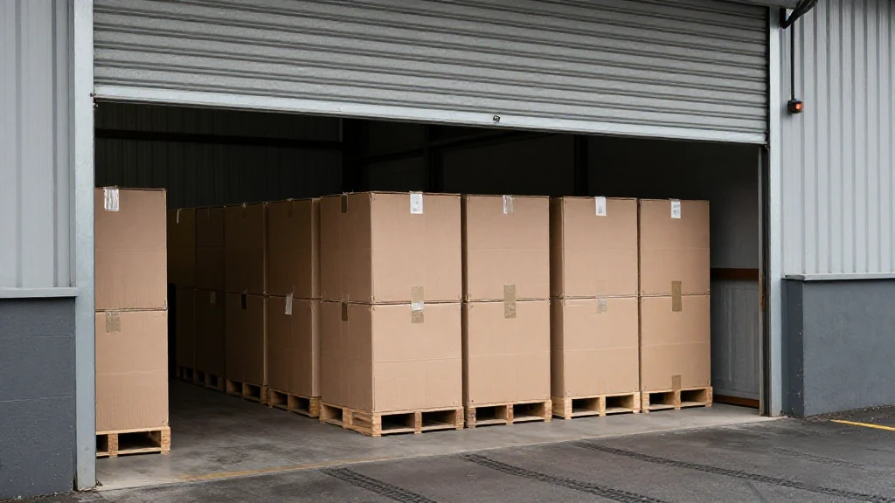
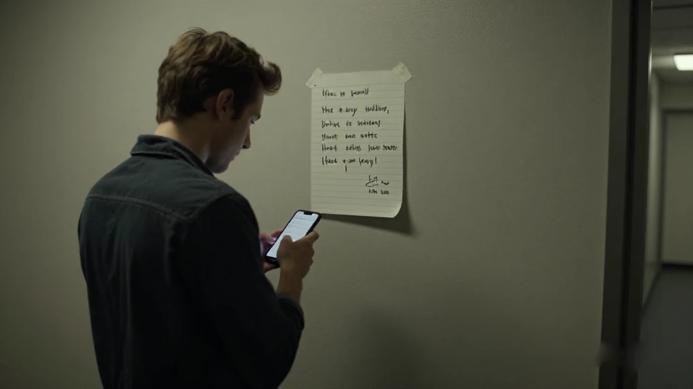
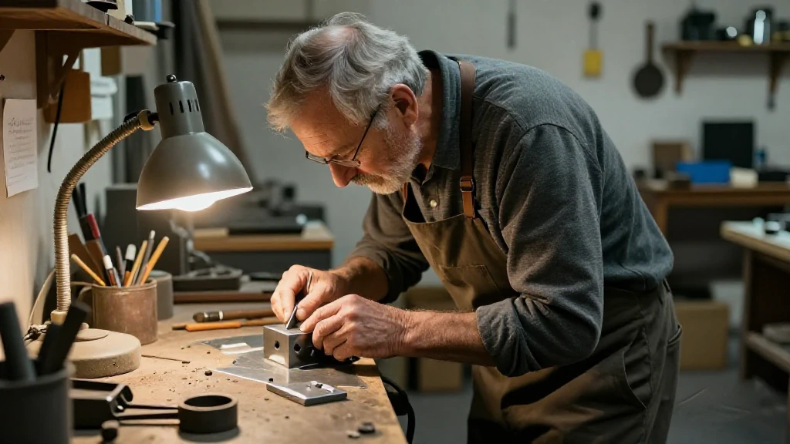
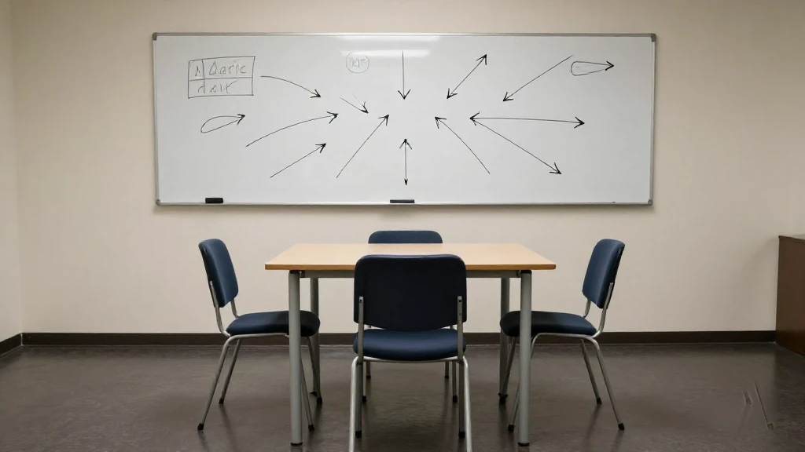

圖片由 AI輔助創作（Z-Image-Turbo）Image by AI (Z-Image-Turbo)
【鄭哥點評】欄目：鄭哥博客點評｜日期：2026-11-12
前排同一個做算力嘅朋友傾偈，佢講咗句我覺得好中：「而家做生意，唔係你有錢就得，亦唔係你有人脈就得。」我做外貿二十六年，越嚟越同意——不過我想補一句：唔止「唔得」，而係呢三樣要乘埋一齊先得。

圖片由 AI輔助創作（Z-Image-Turbo）Image by AI (Z-Image-Turbo)
一、一單兩千萬嘅生意，錢反而係最唔缺嘅一樣
36氪《深氪 Lite》11 月 10 日那篇寫得好清楚：某型號高端 GPU 的 8 卡伺服器，去年年末國內報價約 400 萬元；今年 9 月漲到約 1,500 萬元；近一個月再突破 2,000 萬元。
但最有意思嘅唔係漲幅，係買家結構：國內 AI 大廠能接受嘅上限大約 1,500 萬，「大部分模型廠都放棄購買了」；仍然在追貨嘅，係某頭部模型廠，同埋一啲算力出租商。
算力出租商點解硬着頭皮買？因為佢哋已經同下游客戶簽咗交付合同——唔交貨要賠，賠嘅錢比機器溢價仲多，就只有買。呢句話背後係一件好冷酷嘅事：喺呢個市場，錢唔係門票，只係入場後嘅第一張賬單。
來源：36氪《一台機器 2000 萬，隱秘的天價 GPU 生意｜深氪 Lite》（李炤鋒），2026-11-10｜https://36kr.com/p/4063602885039238

圖片由 AI輔助創作（Z-Image-Turbo）Image by AI (Z-Image-Turbo)
二、人脈唔係「識人」，係「知道邊個真係有貨」
文中一個細節我特別記得：中介林岳前一晚反覆同供貨方確認「貨在、貨主鎖好了」，第二日由朝早七點追到夜晚十一點，最後等嚟嘅係一句「賣不了了」。佢事後懷疑，對接嗰個人自己都只係中間人。
一筆貨由貨主到買家，中間隔住若干層：替貨主找買家的、替買家找貨的、受託代採的。每轉一手，就喺上一家報價上加一層。所以買家見到嘅價格，從來唔止係供需，仲包含一層層嘅資訊稅。
林岳有個判斷真假賣家嘅土辦法，我覺得好實用：型號、價錢呢啲基本問題，對方能唔能即刻答清楚？如果問一句要等半日，或者啱啱應承嘅條件又冒出一個新條件，大概率唔係真賣家。
所以人脈嘅真正價值，唔係通訊錄有幾長，係你離「真正嘅貨主」有幾近。呢個距離，直接決定你係賺差價嘅人，定係被賺差價嘅人。
來源：36氪《一台機器 2000 萬，隱秘的天價 GPU 生意｜深氪 Lite》（李炤鋒），2026-11-10｜https://36kr.com/p/4063602885039238
圖片由 AI輔助創作（Z-Image-Turbo）Image by AI (Z-Image-Turbo)
三、真正嘅門檻：交付
文中有一句話，我睇完停咗一陣：「一台原來談好 450 萬，後來市場價漲到 650 萬以上，那我寧願賠你違約金，再高價賣給別人，扣掉違約金，賺得比原來還多。我幹嘛不違約？」
呢句唔係道德問題，係算術問題。當違約金低於價差，違約就係理性選擇。所以買家真正買嘅，唔係機器，係「明日真係有貨」呢個承諾。承諾嘅兌現能力，就係門檻。
門檻具體長咩樣？文中提到兩樣：一是搭售——想買緊俏型號，得搭住買另一型號，「簡直像買愛馬仕一樣，還得配貨」；二是配額——走原廠配額能便宜約 200 萬（現貨約 650 萬一台），但審核資金、機房、用途證明，過不了就只能回頭買高價現貨。
上游亦頂得死：受訪者估計全球用於組裝嘅現成模組，樂觀只夠再撐約半年，瓶頸係高頻寬記憶體供應同先進封裝產能。同時官方數據係另一個方向——人民日報 7 月報道工信部數據：截至 6 月底，我國智能算力規模同比增長 177%，已建成 52 個萬卡以上智算設施。需求咁猛，供給咁緊，交付就係全部。
來源：人民日報《截至6月底我國智能算力規模同比增長177%》，2026-07-26｜http://paper.people.com.cn/rmrb/pc/content/202607/26/content_30170977.html

圖片由 AI輔助創作（Z-Image-Turbo）Image by AI (Z-Image-Turbo)
四、三樣係乘，唔係加
我想舉一個唔同行業嘅例子做對照。南方+ 9 月寫汕尾碣石鎮，摩托車配件產業：當地師傅手藝頂尖，能把一堆散件還原成一台車；但過去幾十年，呢個鎮賺嘅係低端利潤——家庭作坊見縫插針，消防通道被貨物堵死，環保設施缺位，油污廢水直排，商戶各自為戰、低價競爭。當地一句總結好準：「有市場、缺規範，有活力、缺後勁。」
換句話講，碣石有交付能力（手藝），缺資本同合規，所以定價權唔喺自己手上。而家佢哋要做嘅事，正好就係補另外兩塊板：10 億元產業園、10 萬平方米，規模企業入園、小作坊就地提升。
所以門檻唔係三樣並列，係三樣相乘：錢 × 人脈 × 交付。任何一項趨近零，整體就趨近零。有錢冇人脈，你連貨主都見唔到；有人脈冇錢，消息落到手都落唔到單；有錢有人脈但交唔到貨，第一次交易就變最後一次。
而且三樣會互相兌換：早期用錢換人脈，中期用人脈換交付，後期用交付換返錢——轉得順嘅人，生意越做越輕；轉唔順嘅，永遠停喺賺差價那一層。
來源：南方+《老行當裡蹚出共富新路！陸豐碣石鎮摩托車配件產業「入園上樓」》（陳欣欣），2026-09-07｜https://static.nfnews.com/content/202609/07/c12793732.html

圖片由 AI輔助創作（Z-Image-Turbo）Image by AI (Z-Image-Turbo)
五、鄭哥點評
「有錢唔一定做到生意」——因為錢只解決三樣其中一樣，而且係最容易複製嗰樣。市場上永遠有比你更有錢嘅人，所以錢唔構成門檻，只構成參賽資格。
「有人脈冇錢都唔行」——人脈解決嘅係資訊：邊個真係有貨、幾時能交。但資訊要落單先變成錢，落單要現金。所以人脈變現嘅速度，永遠受現金流限制。
真正嘅門檻係交付：應承明日到貨，並且做得到。呢樣最難複製，因為佢要時間、要網絡、要口碑——三樣都係買唔到嘅。
不過門檻仲有另一面：它同時係風險嘅閘門。現貨紅利會隨供給恢復而消失；技術迭代一到，囤貨可以由資產變負債。所以我睇一門生意，做得大唔大，睇最短嗰塊板；做得久唔久，睇你肯唔肯用其中一樣，去換另外兩樣。
圖片由 AI輔助創作（Z-Image-Turbo）Image by AI (Z-Image-Turbo)
\[Zheng Ge's Take\] Column: Zheng Ge's blog commentary | Date: 2026-11-12
A friend in the computing-power business said something to me recently that landed: 'These days having money is not enough to do business, and having connections is not enough either.' After twenty-six years in foreign trade I agree - with one addition. It is not merely that each alone is insufficient. The three have to multiply.
圖片由 AI輔助創作（Z-Image-Turbo）Image by AI (Z-Image-Turbo)
1. In a twenty-million-yuan deal, cash is the least scarce thing
The 36Kr piece from 10 November lays it out plainly: an eight-GPU server of a certain high-end model quoted around four million yuan late last year, reached roughly fifteen million by September, and broke twenty million within the past month.
But the interesting part is not the curve, it is who is still buying. Domestic AI giants can stomach about fifteen million - 'most model companies have given up' - while a leading model lab and a number of compute-rental firms keep chasing stock.
Why do the rental firms pay up? Because they have already signed delivery contracts downstream; failing to deliver costs more than the premium on the machine, so they buy. Underneath that is a cold fact: in this market money is not the ticket, it is only the first invoice after you get in.
Source: 36氪《一台機器 2000 萬，隱秘的天價 GPU 生意｜深氪 Lite》（李炤鋒），2026-11-10 | https://36kr.com/p/4063602885039238
圖片由 AI輔助創作（Z-Image-Turbo）Image by AI (Z-Image-Turbo)
2. Connections are not knowing people - they are knowing who actually holds stock
One detail stays with me. The broker Lin Yue spent the previous night confirming with a supplier that the stock existed and had been locked. From seven the next morning until eleven at night he kept chasing. What came back was: 'It cannot be sold.' Afterwards he suspected the person he was dealing with was just another middleman.
Between the owner of the goods and the buyer sit several layers: people who find buyers for owners, people who find goods for buyers, agents buying on instruction. Every hand adds a layer to the previous quote. So the price a buyer sees is never just supply and demand - it carries a tax for each layer of information.
Lin Yue has a rough test for whether a seller is real, and I find it practical: can they answer basic questions - model, price - immediately? If a question takes half a day, or agreed terms sprout a new condition, they are probably not the seller.
So the value of connections is not the length of your contact list. It is how close you stand to whoever really owns the goods. That distance decides whether you earn the spread or pay it.
Source: 36氪《一台機器 2000 萬，隱秘的天價 GPU 生意｜深氪 Lite》（李炤鋒），2026-11-10 | https://36kr.com/p/4063602885039238
圖片由 AI輔助創作（Z-Image-Turbo）Image by AI (Z-Image-Turbo)
3. The real threshold: delivery
One line in the piece made me pause: 'A server was agreed at four and a half million; then the market went past six and a half. I would rather pay you the penalty, sell it high to someone else, and after the penalty still make more than the original deal. Why would I not break it?'
That is not a question of morals, it is arithmetic. When the penalty is smaller than the spread, breaking the contract is the rational move. So what a buyer is really buying is not a machine but the promise that goods exist tomorrow. The ability to honour that promise is the threshold.
What does the threshold look like in practice? Two shapes appear in the piece. One is bundling: to get the scarce model you must also take another one - 'like buying Hermès, you have to buy extra'. The other is allocation: buying on the manufacturer's quota is about two million cheaper than the six-and-a-half-million spot price, but it is gated on proof of funds, machine room and end use. Fail the gate and you are back in the expensive spot market.
Upstream is just as tight. One source estimates global finished modules for assembly are, optimistically, enough for about another six months, with high-bandwidth memory supply and advanced packaging capacity as the bottleneck. Official numbers point the same way - People's Daily reported in July from industry ministry data that smart computing power grew 177 per cent year on year to the end of June, with 52 AI facilities above ten thousand cards already built. Demand that steep against supply that tight makes delivery everything.
Source: 人民日報《截至6月底我國智能算力規模同比增長177%》，2026-07-26 | http://paper.people.com.cn/rmrb/pc/content/202607/26/content_30170977.html
圖片由 AI輔助創作（Z-Image-Turbo）Image by AI (Z-Image-Turbo)
4. The three multiply; they do not add
Let me use a different industry as a control case. In September, Southern Plus wrote about Jieshi in Shanwei, a motorcycle parts town. The local mechanics are superb - they can rebuild a machine out of scattered parts - yet for decades the town earned low-end margins: workshops squeezed into any gap, fire lanes blocked with goods, no environmental facilities so oily water went straight out, merchants undercutting each other. A local summary puts it exactly: 'Market, yes; standards, no. Vitality, yes; staying power, no.'
In other words Jieshi had delivery capability - the craft - but lacked capital and compliance, so it never held pricing power. What the town is doing now is precisely filling the other two boards: a one-billion-yuan park on a hundred thousand square metres, larger firms moving in, small workshops regularised in place.
So the threshold is not three items in a row, it is three multiplied: money times connections times delivery. Push any one toward zero and the product goes to zero. With money but no connections you never meet the owner of the goods. With connections but no money you hold a tip you cannot turn into an order. With money and connections but no delivery, the first deal is the last.
And the three convert into each other: early on you spend money to buy connections, later you spend connections to buy delivery, and finally you spend delivery to earn money back. Those who convert well find the business getting lighter; those who do not stay forever in the spread-taking layer.
Source: 南方+《老行當裡蹚出共富新路！陸豐碣石鎮摩托車配件產業「入園上樓」》（陳欣欣），2026-09-07 | https://static.nfnews.com/content/202609/07/c12793732.html
圖片由 AI輔助創作（Z-Image-Turbo）Image by AI (Z-Image-Turbo)
5. Zheng Ge's Take
'Money is not enough' - because money solves one of the three, and it is the easiest one to copy. There is always someone richer, so money is not a threshold, it is an entry ticket.
'Connections without money will not work either' - connections solve information: who really holds stock, when it can ship. But information only becomes money when an order is placed, and orders need cash. How fast connections convert is always capped by cash flow.
The real threshold is delivery: promising tomorrow and doing it. That is the hardest thing to copy, because it needs time, network and reputation - none of which can be bought.
Yet a threshold has a second face: it is also the gate that keeps risk out. Spot premiums vanish when supply recovers, and one technology cycle can turn inventory from asset into liability. So when I look at a business, how big it can get depends on its shortest board; how long it lasts depends on whether you are willing to trade one of the three for the other two.